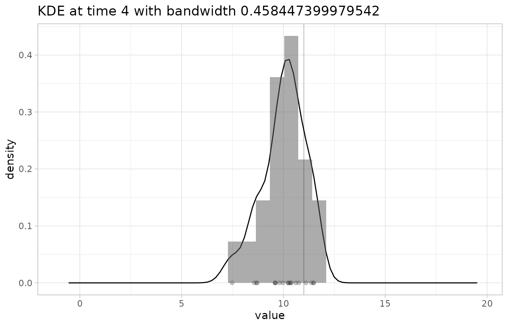
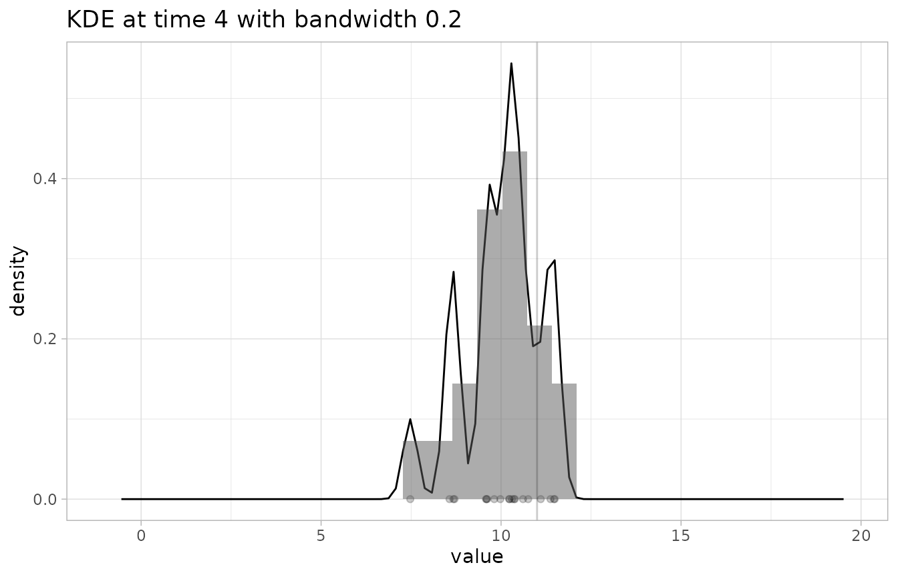
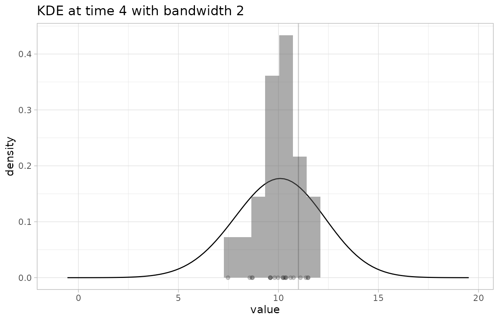

casteval includes several scoring funcions, such as
accuracy(), log_score(), and
bias(). These functions can be passed to
score(), plot_forecast(), etc., or they can be
used directly for scoring.
In general, scoring functions accept the following arguments:
-
fcst: a forecast object -
obs: an observations data frame - Additional arguments specific to particular scoring functions, such
as the
summarizeflag
In order for scoring to be possible, fcst and
obs must use the same time type. If
fcst or obs contain times not contained by the
other, these times will be ignored when scoring.
If the forecast object includes a forecast date, then all data prior
to fcst$forecast_time will be ignored when scoring.
The summarize flag
Many scoring functions calculate intermediate scores for each time
point, and then select/combine those scores in order to return a single
value. These functions accept an optional summarize
parameter, which is a boolean.
If summarize is TRUE (the default), the
scoring function will usually return the score as a single number1.
If summarize is FALSE, the scoring function
will return a data frame with time, obs, and
score columns, containing the observations and scores
calculated for each time point that was scored. The type of the
score column is not necessarily numeric (for example, in
accuracy(), it is logical).
Scoring functions
Below we describe the behaviour of all the builtin scoring functions. See the function documentation for details.
Accuracy score
accuracy() calculates the proportion of observations
that fall inside a quantile interval of the forecast data.
If the forecast contains summarized forecast data, accuracy will be
calculated using the provided quantiles. If the forecast contains raw
forecast data, you can use the quant_pairs parameter to
specify a pair of quantiles (e.g., c(2.5, 97.5))
or a list of pairs of quantiles (e.g.,
list(c(2.5, 97.5), c(10, 90))) against which to calculate
accuracy. If a list of pairs of quantiles is provided, a separate score
will be calculated for each pair.
If summarize is TRUE, then the score(s)
will be returned as a vector of numbers from 0 to 1, one score per
quantile pair. If summarize is FALSE, an
accuracy score will be provided for each observation (as a boolean). If
more than one pair of quantiles is requested, then the returned data
frame will contain an additional column named pair, which
will indicate which quantile pair each score corresponds to.
Examples
# A forecast with raw data
fc1 <- create_forecast(data.frame(
time=rep(1:5, each=11),
val=rep(0:10, 5)
))
# A forecast with quantile data
fc2 <- create_forecast(dplyr::tibble(
time=1:5,
val_q5=c(0.5,0.5,0.5,0.5,0.5),
val_q10=c(1,1,1,1,1),
val_q25=c(2.5,2.5,2.5,2.5,2.5),
val_q75=c(7.5,7.5,7.5,7.5,7.5),
val_q90=c(9,9,9,9,9),
val_q95=c(9.5,9.5,9.5,9.5,9.5)
))
# Another forecast with quantile data
fc3 <- create_forecast(data.frame(
time=1:5,
val_q2.5=c(6,6,6,6,6),
val_q97.5=c(10,10,10,10,10)
))
obs <- data.frame(time=1:5, val_obs=c(0, 2.4, 5, 9.5, 10))
# Calculate accuracy from raw data
accuracy(fc1, obs, quant_pairs=c(25, 75))
#> Scoring accuracy using quantile pairs c(25, 75)
#> Used 5 time points to calculate accuracy
#> [1] 0.2
# Calculate the accuracy for every quantile pair present
accuracy(fc2, obs)
#> Scoring accuracy using quantile pairs c(5, 95), c(10, 90), c(25, 75)
#> Used 5 time points to calculate accuracy
#> [1] 0.6 0.4 0.2
# Calculate the accuracy for a subset of quantile pairs
accuracy(fc2, obs, quant_pairs=list(c(5,95), c(25,75)))
#> Scoring accuracy using quantile pairs c(5, 95), c(25, 75)
#> Used 5 time points to calculate accuracy
#> [1] 0.6 0.2
# Calculate accuracy for only one quantile pair
accuracy(fc2, obs, quant_pairs=c(5, 95))
#> Scoring accuracy using quantile pairs c(5, 95)
#> Used 5 time points to calculate accuracy
#> [1] 0.6
# If `forecast_time` is NULL, every time point in the forecast will be scored
accuracy(fc3, obs)
#> Scoring accuracy using quantile pairs c(2.5, 97.5)
#> Used 5 time points to calculate accuracy
#> [1] 0.4
# Otherwise, everything prior to `forecast_time` will be ignored
fc3$forecast_time <- 3
accuracy(fc3, obs)
#> Scoring accuracy using quantile pairs c(2.5, 97.5)
#> Used 3 time points to calculate accuracy
#> [1] 0.6666667
# We can see what is happening behind the scenes by passing `summarize=FALSE`
df <- accuracy(fc3, obs, summarize=FALSE)
#> Scoring accuracy using quantile pairs c(2.5, 97.5)
df
#> time val_obs score pair
#> 1 3 5.0 FALSE 1
#> 2 4 9.5 TRUE 1
#> 3 5 10.0 TRUE 1
mean(df$score)
#> [1] 0.6666667
# `pair` column maps rows to quantile pairs
accuracy(fc2, obs, summarize=FALSE)
#> Scoring accuracy using quantile pairs c(5, 95), c(10, 90), c(25, 75)
#> time val_obs score pair
#> 1 1 0.0 FALSE 1
#> 2 2 2.4 TRUE 1
#> 3 3 5.0 TRUE 1
#> 4 4 9.5 TRUE 1
#> 5 5 10.0 FALSE 1
#> 6 1 0.0 FALSE 2
#> 7 2 2.4 TRUE 2
#> 8 3 5.0 TRUE 2
#> 9 4 9.5 FALSE 2
#> 10 5 10.0 FALSE 2
#> 11 1 0.0 FALSE 3
#> 12 2 2.4 FALSE 3
#> 13 3 5.0 TRUE 3
#> 14 4 9.5 FALSE 3
#> 15 5 10.0 FALSE 3Logarithmic score
log_score() calculates the (positive) log score of a
forecast. It uses Kernel
Density Estimation (KDE) to obtain a probability distribution of
forecasted values at each point in time in the forecast. If
f(x) is the estimated probability distribution and
x_0 is the corresponding observation, then the log score at
that point in time is log(f(x_0)) (where log()
is the natural logarithm).
The forecast must contain raw data with 2 or more values per time point.
If summarize is TRUE, one score will be
returned and it will be based on either the score at time
at or at fcst$forecast_time + after, depending
on whether at or after is provided. (Only one
is accepted at a time.)
If summarize is FALSE, then at
and after are ignored, and the output will be a data frame
as described above, with scores for each
observation.
The KDE requires a bandwidth in order to calculate the forecast
distribution at each observation time. If bw is not
provided, then a reasonable bandwidth will be automatically determined.
Otherwise, the value of bw (which must be a number greater
than 0) will be used. See ?log_score for more details.
Visualizing the KDE
When evaluating forecasts using log_score() you may want
to inspect inspect the KDE as a confidence check, especially if the
forecast data is very sparse. You may also want to see how setting the
bw parameter affects the resulting distribution, or whether
the automatically calculated bandwidth is acceptable.
plot_KDE() allows you to do this. Like
log_score(), it accepts the parameters fcst,
obs (which is now optional), at,
after, and bw. It also accepts the optional
parameters from, to, n, and
binwidth (not to be confused with bandwidth). See
?plot_KDE for a detailed explanation of these extra
parameters.
plot_KDE() will plot the following elements:
- the data points of the
fcstand/orobsat the time point specified byatorafter - a histogram showing the distribution of
fcst’s data points (once again specified byatorafter), normalized to integrate to 1 in order to be comparable to a probability density - the density curve calculated by the KDE
Examples
# generated using `rnorm(20) + 10`
d <- c(10.609344, 10.383797, 11.102006, 10.232616, 11.372632, 11.489963, 10.359282, 10.303749,
7.477219, 9.612921, 8.568241, 11.467244, 9.979756, 10.226105, 9.592584, 9.582751, 8.674618,
8.706757, 9.810594, 10.752879)
fcst <- create_forecast(
data.frame(time=rep(1:5, each=20), val=rep(d,5)),
forecast_time=2
)
obs <- data.frame(time=1:5, val_obs=c(2, 7, 10, 11, 100))
# get the score at time 3
log_score(fcst, obs, at=3)
#> [1] -0.9654438
# get the score at time `fcst$forecast_time + 2` (4)
log_score(fcst, obs, after=2)
#> [1] -1.319126
# get all the scores as part of a data frame
log_score(fcst, obs, summarize=FALSE)
#> # A tibble: 4 × 3
#> time val_obs score
#> <int> <dbl> <dbl>
#> 1 2 7 -3.67
#> 2 3 10 -0.965
#> 3 4 11 -1.32
#> 4 5 100 -Inf
# check the KDE at time 4 with default binwidth
# the observation point shows up as a vertical line
plot_KDE(fcst, obs, at=4)
#> `stat_bin()` using `bins = 30`. Pick better value with `binwidth`.
# check the KDE at time 4 with a too-low binwidth (making the resulting distribution very jagged)
plot_KDE(fcst, obs, at=4, bw=0.2)
#> `stat_bin()` using `bins = 30`. Pick better value with `binwidth`.
# check the KDE at time 4 with a too-high binwidth (resulting in an underconfident distribution)
plot_KDE(fcst, obs, at=4, bw=2)
#> `stat_bin()` using `bins = 30`. Pick better value with `binwidth`.
Continuous Ranked Probability Score (CRPS)
crps() is the Continuous
Ranked Probability Score. It is similar to the
log_score() in that it can only be performed on raw
forecast data, since it requires a distribution of predicted
observations at each fixed time. However, it works using the
cumulative distribution function of the predicted
observations at each time (and not the probability density function), so
does not rely on kernel density estimation. It is also penalizes
inaccurate forecasts less harshly than log_score().
Examples
set.seed(42)
dat <- rnorm(20) + 10
fc <- create_forecast(data.frame(time=rep(1,20), val=dat))
obs1 <- data.frame(time=1, val_obs=10)
obs2 <- data.frame(time=1, val_obs=100)
# the closer the score is to 0, the better
crps(fc, obs1, at=1)
#> [1] 0.2897223
# note how inaccuracies are not penalized as harshly as with `log_score()`
crps(fc, obs2, at=1)
#> [1] 89.10485Bias
bias() calculates how much a forecast overpredicts and
underpredicts each observed value, and returns the result as a number
between -1 and 1, where -1 means all observations were underpredicted
and 1 means all observations were overpredicted.
bias() looks for three kinds of forecast data:
- raw data (
val) - mean data (
val_mean) - median data (
val_q50)
It uses the first of these that it can find to calculate the bias.
Examples
obs <- data.frame(time=1:5, val_obs=rep(10,5))
# this forecast
fc1 <- create_forecast(dplyr::tibble(
time=c(1,1,2,2,3,3,4,4,5,5),
val=c(9, 9, 9, 10, 10, 10, 10, 11, 11, 11)
))
bias(fc1, obs, summarize=FALSE)
#> # A tibble: 5 × 3
#> time val_obs score
#> <dbl> <dbl> <dbl>
#> 1 1 10 -1
#> 2 2 10 -0.5
#> 3 3 10 0
#> 4 4 10 0.5
#> 5 5 10 1
fc2 <- create_forecast(data.frame(
time=c(1,1,1,2,2,2,3,3,3),
val=c(9,9,9,10,10,10,11,9,9)
))
bias(fc2, obs)
#> [1] -0.4444444
fc3 <- create_forecast(data.frame(time=1:3, val_mean=c(12,12,10)))
bias(fc3, obs)
#> [1] 0.6666667
fc4 <- create_forecast(data.frame(time=1:3, val_q50=c(0,0,0)))
bias(fc4, obs)
#> [1] -1Defining your own scoring functions
You can define your own scoring functions and use them just as you
would casteval’s built-in scoring functions. Like the
functions described above, it should accept a forecast object
fcst, an observations data frame obs, and
possibly additional arguments. If your scoring function returns a score
for each observation (in the same way that
summarize=FALSE does for the functions above), then the
plotting functions can readily use this added information when
visualizing forecast scores (discussed further below).